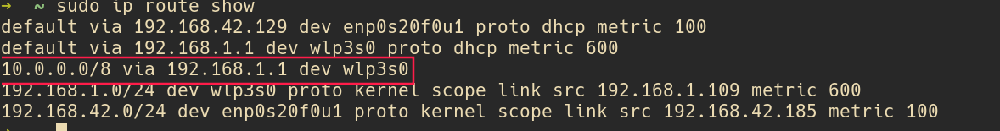
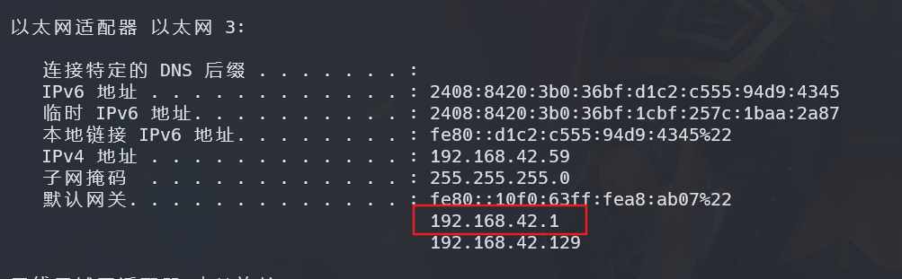
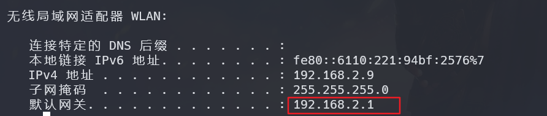

笔记本可以同时连接无线和有线，如果可以指定哪些ip使用无线，哪些ip地址可以使用有线，
假设无线连接的是内网， 有线连接的是外网，可以设置静态路由，使访问不同的地址使用不同的网络
首先确定 本机 无线和有线 的网关：
sudo ip route show

如上图 wlp3s0 是我的无线设备，enp0s20f0u1 是有线设备， 可以把网线拔了来确定哪个是什么设备 无线设备使用 192.168.1.1 作为网关 有线设备使用 192.168.42.129 作为网关
设置路由
假设 某公司的内网都是 10 开头的，
ip route add 10.0.0.0/8 via 192.168.1.1 dev wlp3s0
10.0.0.0/8 是DICP表示法，不懂可以使用 站长工具 计算
此时在使用 sudo ip route show 查看路由表

永久生效
上述方法只能临时生效，可以写成脚本开机自启arch 添加rc.local 实现开机自启
本方法已在 arch 中验证 其他系统 大同小异，寻找 代替 ip route 的命令即可
win 下设置方法
-
使用管理员打开 powershell
-
ipconfig查看优先和无线的网关  
route -p add 40.0.0.0 mask 255.0.0.0 192.168.2.1 添加 40 开头的ip 走内网
route -p add 10.0.0.0 mask 255.0.0.0 192.168.2.1 添加 10 开头的ip 走内网